Overview
To start using ProcessMaker, it is necessary to become familiar with the elements in the Process Map and Designer to create a project. Some of the main elements of the process designer are described in this page.
Note: To avoid overwriting issues, a feature is available to forbid opening multiple browser instances of ProcessMaker. For more information go to: Configuration File env.ini: session_block.
Designer
In the Designer, there is a list of existing BPMN projects and their characteristics.
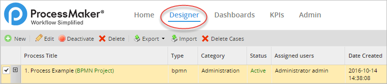
New projects can be created and opened for editing. The toolbar at the top provides six options to work with, including options to filter the list of projects by category and the search option.
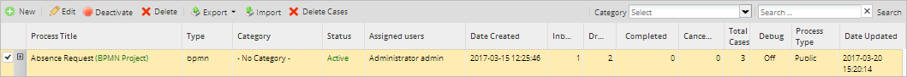
The information shown in the columns of this page is the following:
- Process Title: The title of the BPMN project or the classic process. Process titles are limited to a maximum of 100 characters. Titles of old processes with more than 100 characters are automatically shortened to this limit when they are saved.
- Type: The type of process is
"bpmn", meaning that the BPM project uses the BPMN 2.0 notation, or"classic"for imported processes created in previous versions. - Category: Category of the process. To add new categories see Process Categories.
- Status: The status of the process, which is either "Active" or "Inactive". No cases can be executed in processes that have "Inactive" status.
- Assigned Users: The user who created the process.
- Date Created: The date when the process was created.
- Inbox: The number of cases of the process that are currently pending and appear in the user's inboxes to be worked on. This number includes cases in the Inbox and Unassigned trays. These cases haven't yet been opened by the currently assigned users.
- Draft: The number of cases in a process that have Draft status, meaning that the currently assigned users have opened these cases, but haven't yet completed the current task.
- Completed: The number of completed cases in the process, meaning that the final task in the process has been reached and the case can no longer be worked on.
- Canceled: The number of canceled cases in the process. See canceled cases.
- Total Cases: The total number of cases that have been created in the process (including canceled cases, but not paused cases).
- Debug: On/Off. The Debugger pauses the case when triggers are executed and displays the system and case variables, so that process designers can debug their trigger code and check how a process is modifying variables. See Debugging Triggers.
- Process Type: The type of the process: public or private.
- Date Updated: The date when the process was updated.
Designer Menu
The toolbar above the list of projects contains the following icons:

To use the Edit, Status, Delete and Export options, first select an item of the list.
Creating a New Project
To create a new project, click on the New button of the designer menu as seen in the image below.

ProcessMaker 3.1 and later only creates projects with BPMN 2.0 notation. Note that processes created in the classic designer CAN NOT be opened in the new designer and projects created in ProcessMaker 3 CAN NOT be imported or opened in the classic designer.
After clicking on New, a window will open that has to be filled with a:
- Title: Title of the new project. Notice that Process Titles are limited to a maximum of 100 characters.
Warning: It is a bad practice to add angular brackets
< >to the title name like<<TestName>>. It causes the project title of the Process Map to display incorrectly since the Process Map renders with HTML. - Description: A brief summary of the process created.
- Category: Category of the process. This field is filled in with "No category" by default.

Once the new project is created, ProcessMaker will redirect to the Process Map inside the Designer tab.
Editing a Project
To edit an existing project, either double click on a project in the list, or select a project in the list and then click on the Edit button. See the image below:

If no process is selected and the Edit button is clicked, the following message is displayed.

Once inside the designer, the process information can be changed by right clicking on a blank space of the Process Map and selecting Edit Process.
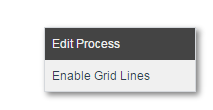
Right-click on any element in the process to show its context menu and see more options. The following window will be displayed:

- UID: The process UID. (Available Version: The UID field is available as of ProcessMaker 3.2.2 on).
- Title: Required Field. Modify the name of the project in this field. This field accepts a limit of 100 characters, which can consist of letters, numbers, (_) underscores), and (-) hyphens and characters like '$', '#', '&', etc.
- Description: Enter a brief description about the project in this text area.
- Process Owner: Required Field. Administrator by default. The Process Owner setting ensures that a process has an owner. If you change the owner and then you delete that user, the process automatically assigns the ProcessMaker Administrator. It is recommended to have the Process Owner setting accurate to avoid losing the process when a private process owner is deleted.
- Calendar: Select a calendar from the list, which indicates the hours and days when users are expected to be at work. It is possible to create your own calendar depending on the work days and hours. If "None" is selected, then the default calendar will be used.
- Process Category: Select one category from the list that will identify the project. It is possible to create new categories.
- Dynaform to show a case summary: From the list, select the Dynaform that will appear in the Case Summary. As of ProcessMaker 3.3.4, this Dynaform also appears when opening unassigned cases. If "None" is selected, then the summary displays generic information, such as who is assigned to the case and when it was created, but it does not display any case data.
- Routing Screen Template: Process designers can personalize the screen template that is shown to the user when is completed and routes to the next task in the process. Each task may have its own routing screen template.
- Debug: When designing a process, it is a good idea to activate the Debug option, which shows when triggers are fired and any errors that may have occurred. In normal production mode, error reporting is suppressed, so it is often difficult to know whether the trigger code executed correctly or not. More importantly, the Debug option allows the user to examine the values in the variables that are passed to triggers. For security reasons, be sure to deactivate Debug mode when your process is used in production.
- Hide the case number and the case title in the steps: This option allows the case number and title to be hidden from the user while executing a case. Hiding the case number may be useful if users should not know how many cases have already been executed.
- This a sub-process: Selecting this option designates the project as a sub-process of a parent process and removes the project from the list when users click on "New case" under the Home menu, so users cannot initiate cases with this process.
- Execute a trigger when a case is created: Select a trigger to be fired when a case is created. For example, a trigger could search the APPLICATION table for the last case created by the same user in the same process and copy its data to the new case.
- Execute a trigger when a case is deleted: Select a trigger to be fired when a case is deleted. For example, a trigger could send a notification to a user's supervisor when the user deletes a case.
- Execute a trigger when a case is canceled: Select a trigger to be fired when a case is canceled. For example, a trigger could remove data from an external database when a case is canceled.
- Execute a trigger when a case is paused: Select a trigger to be fired when a case is paused. For example, a notification could be sent to members of a department when a user pauses a case.
- Execute a trigger when a case is unpaused: Select a trigger to be fired when a case is unpaused. For example, a notification could be sent to members of a department when a user unpauses a case.
- Execute a trigger when a case is reassigned: Select a trigger to be fired when a case is reassigned. For example, a trigger could initiate a case in one process when a user reassigns a case.
- Execute a trigger when a case is opened: Select a trigger to be fired when a case is opened. For example, a trigger could assign values to variables that are used in conditions to open Dynaforms or execute other triggers in the first step of the task.
- Process Design Access: Public/Private (Owner): Select Public if the process may be edited by any user who has the PM_FACTORY role and can access the designer. Select Private to only give the user who created the process the ability to modify it. The Process Type column in the Designer menu indicates whether the process is "Public" or "Private".
- Cost: This field is related to the KPI's, and it is where the managers should set up the approximate cost of the idle times in the execution of the process cost. For example, if a case of the process has the "Unassigned" status, it is not possible to charge any user for idle time. In that case, the "inefficiency" is calculated using the amount set in this field.
- Units: Set the currentcy unit of the Cost field in this field.
- Save: This option saves the properties of the project. When the configuration is saved, a flash message will be displayed indicating that the process properties were saved successfully.
- Cancel: This option discards any changes made in the project properties.
Note: Right-click on any element in the process to show its context menu and see more options.
Showing the Project Status
This option shows the status of the project: Active or Inactive. Cases cannot be executed in projects that have Inactive status.

When a project an Active status is selected, the Deactivate button will appear in the toolbar. Meanwhile, projects with an Inactive status will have the Activate button in the toolbar.

- Deactivate: To change the status of a project to Inactive so no cases of that project can be executed, first select the project in the list and then click on the Deactivate button.
- Active: To change the status of a project to Active so cases of a process can be executed, first select the project in the list and then click on the Activate button.
Deleting a Project
Click on this option to delete a project. A project can only be deleted if there are no active cases of the project. If there are any active cases, either complete, delete or cancel the cases before attempting to delete the project. If the project does not have active cases, a dialog box is shown asking the user to confirm the deletion:

Select "Yes" to delete the project, or click "No" to close the message without deleting the case.
If the project has any active cases, then an error message will appear preventing the project from being deleted.

Note: Deleting a project will not remove its cases from the database.
Exporting a Project
This option allows administrators to export the project directly from the Designer menu. The project will be saved in a file with the .pmx extension. For more information, see the complete documentation on Importing and Exporting projects.
When exporting a project, it will not export the assignment of users and/or groups to the tasks in the project. Neither does it export any case of the project. To export user assignments and cases, along with the definition of the project, see Backing up Workspaces.
Importing a Project
To import a project, click on the Import button, then select the project file to be uploaded from the server so it can be imported into ProcessMaker.

Note that only the definition of the process is imported, but user assignments and cases are not imported. For more information see the complete documentation on Importing and Exporting Projects.
Deleting all Cases of a Process
To delete all the cases of a specific process, click on the Delete Cases button after selecting a process from the list. This option is available only if the user has been assigned the DELETE_PROCESS_CASES permission.

After clicking the Delete Cases option, a message window opens to confirm how many cases of the selected process will be deleted.

Click 'Yes' to confirm deleting all cases and the following message will show the progress. Only cases belonging to the selected process will be removed from the Inbox, Draft, Paused, Unassigned, and Participated trays.

The Process Map
One of the major changes in ProcessMaker 3 is the radical improvement of the Process Map. New functionalities were included and adapted to expand existing ProcessMaker functionalities and provide a better layout of objects in the Process Map. Some of the elements were also replaced by BPMN elements to improve the horizontal design. However, the graphical drag-and-drop interface, which allows elements to be easily added, deleted and rearranged, was kept.
The main characteristics of the designer include:
- The ability to select multiple elements at a time in the Process Map and move them as a group without changing the structure of the process.
- Annotations can be connected to a task.
- Processes are auto saved every 15 seconds. As of ProcessMaker 3.6.0, by enabling the Auto Save toggle, processes are auto saved every 40 seconds.
- Routing rules were replaced by BPMN Gateways.
- Elements, such as tasks and gateways, are delimited with yellow dots, which can be dragged & dropped onto other elements to create connections.
- Elements in the designer can be moved using the
left,right,downandupkeys on the keyboard. - A new toolbox provides direct access to design elements such as: Dynaforms, Output Documents, Input documents, Triggers and Database Connections.
To create a process, it is necessary to recognize the elements that make up the Process Map:
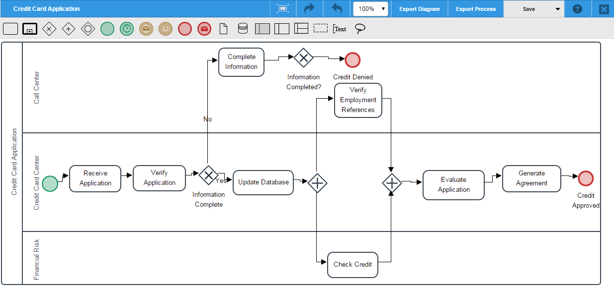
Note: It is not recommended to work on the design of the same process using different tabs or windows of the browser. ProcessMaker does not work properly under such circumstances.
Quick Toolbar
Designers have the ability to easily complete the next step in the design using the Quick Toolbar option. This option shows the next available elements to add to the Process Map.
For a task, the next available elements may be another task, an intermediate event, an end event, a gateway, or a flow to another element. If the element can be configured, the configuration option will also appear in the Quick Toolbar of the element, along with the Delete option.
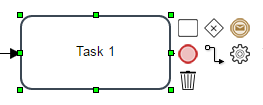
For a gateway, the next available elements may be another gateway, a task, an end event or a flow to another element. The configuration and delete options are also available.
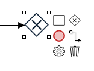
When creating a new project there is already a start event added in the Process Map. When clicking on the element, the next available elements for the start event will be shown. By simply clicking on the next element, the element will be added to the Process Map. The flow between elements is also added when using this option.

In the figure above, after the task "Request leave" is added, the next elements (the "Approve leave request" task, the "Approved?" exclusive gateway, and the end element "Send Confirmation") are also added using the Quick Toolbar of each element.
Warning: The quick toolbar of a start event shows a gateway but the process flow cannot start with a gateway, the gateway will be added into the designer canvas but it won't be connected to the start event.
Element Connection Validation
As of ProcessMaker 3.0.1, when connecting two elements in the process map, the next available element is green. Meanwhile, invalid connections between elements will be red.
For example, when connecting a start event and a task already added to the process map, the connector between the task and the start event will be green to represent its availability to connect:

When making an invalid connection, such as between a start event and an end event, the element will become red, indicating that is impossible to connect the two elements.

Toolboxes and Process Design Tools
The title of the project and the main options are located in the top toolbar. The BPMN 2.0 elements used to design processes are located right under the top toolbar. The main toolbox, which holds the options to manage the process, create variables and forms, is initially located at the right side of the Process Map. However, it is a floating menu that can be minimized or placed in another place of the Process Map.
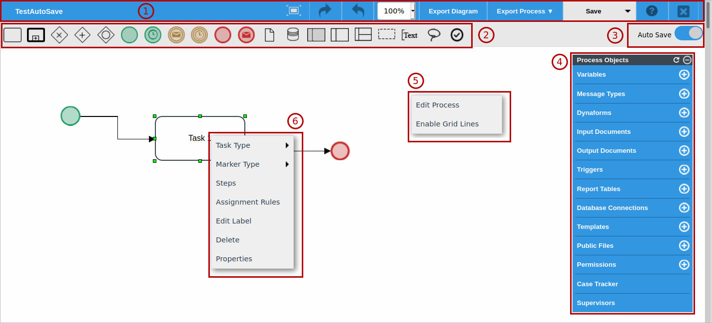
The main toolboxes and process design tools are:
- The Top Toolbar
- Shapes Toolbox
- Auto Save Toggle
- Main Toolbox
- Process Context Menu
- Elements Context Menu
The Top Toolbar
The top toolbar displays the title of the project and shows the following options to modify the behavior of the Process Map:

Warning: In the process designer, when a process map element is deleted and the changes are saved, the Undo/Redo action does NOT recover the configuration of the process map element (e.g. assignment rules and steps of a task). The Undo/Redo action only recovers the process map element's icon without any pre-set configuration.
In the top toolbar, the Zoom option allows the user to adjust the size of the text and images on the Process Map. To see how it works, take a look at the next image:

- Check out the difference between the sizes 75% and 150%:
- 75% in size
- 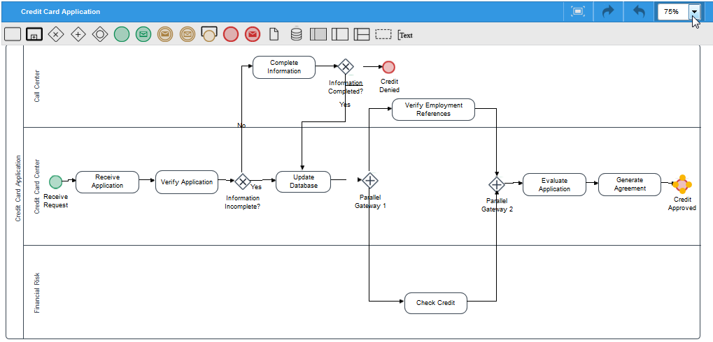
- 150% in size
- 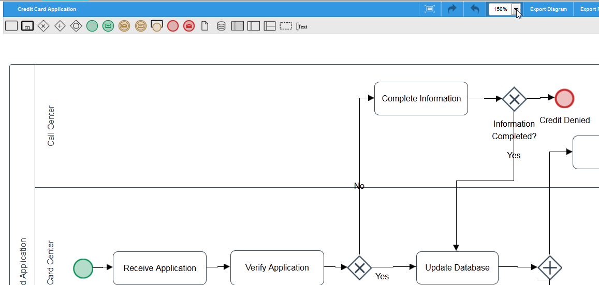
The toolbar also has two options to export both the diagram and the process. The description of both options are in the next image:

Warning: Diagrams that include data objects (data entry and/or data output controls) may get corrupted when the user uses the Export diagram option.
The Save and Save As options can also be found in the top toolbar. When either of these buttons are clicked, a quick message will appear at the top of the designer indicating that the process was saved successfully. If an error occurred or the session was lost while saving the process, an error message will appear at the top of the designer.

Click on Cancel to discard all changes. After clicking Save, the new process will be in the designer available to be edited. It will be also listed among the rest of the projects with the new title given.

As of ProcessMaker 3.6.0, instead you can use the Auto Save toggle.
Shapes Toolbox
The shapes toolbox is located below the top toolbox at the top of the designer. This toolbox includes BPM design elements such as: Tasks, Sub processes, Gateways, Events, Artifacts, among others.
The elements included in this toolbox are described in the image below:
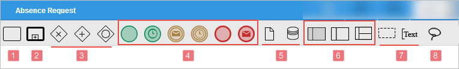
- Task
- Sub-process
- Gateways: Includes the following gateway types: exclusive, parallel, inclusive.
- Events: Includes the following types of events: an empty start event, a timer start event, an intermediate timer event, an intermediate message event, an empty end event, and an end message event.
- Data Elements: Includes: data object and data store.
- Pools and Lanes: Includes: black box pool, pools and lanes.
- Artifacts: Includes: group and annotations.
Lasso: Allows the selection of multiple elements in the design to move them as a block using the cursor keys. Note that this control does not work with elements that are inside a pool or lane.
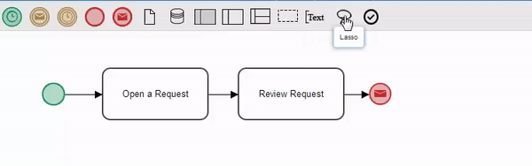
Elements grabbed by the lasso can't be deleted all at once when pressing the DEL key.
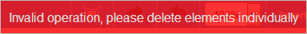
Note that if for some reason the process designer window is closed while moving elements with the lasso tool changes won't be saved.
Auto Save Toggle
Available Version: As of ProcessMaker 3.6.0
After switching on the Auto Save toggle, ProcessMaker saves the Process diagram in the Process map automatically. It does not include auto save settings in a process element context menu.

If you switch off the Auto Save toggle, it is possible to save your process by using the Save or Save As options available in the Top Toolbar.
ProcessMaker saves the process diagram every 40 seconds automatically. Otherwise, if you go to a different screen before this time, ProcessMaker alerts you that there are no saved changes.

Main Toolbox
This toolbox contains the options to manage the process, create variables, Dynaforms, Input and Output Documents, Report Tables, database connections, templates, public files, message types, triggers, permissions, Case Tracker, supervisors, and DMS files:
One of the main characteristics of this toolbox is the ability to move it to any place in the Process Map.
This toolbox includes the following process design elements:
Variables: Create case variables to be used in Dynaforms, triggers, and other objects where they are required.
Message Types: Create Message Types to be sent along with Message Events.
Dynaforms: Create custom forms that can be designed in ProcessMaker to interface with the user while running a case.
Input Documents: Create input documents to upload any file during the execution of a process.
Output Documents: Create output document to generate PDF or DOC documents during the execution of a process.
Triggers: Insert PHP code into a process.
Report Tables: Export data from a case so it can be easily accessed by external applications and standard SQL queries.
Database Connections: Connect ProcessMaker with other external databases.
Templates: Templates are .html files used as email templates for sending notifications.
Public Files: Stores files that will be used in a process, such as common documents for the organization, graphics files, etc.
Permissions: Manage the permissions of the project by user or group in ProcessMaker
Case Tracker: Generates a PIN that allows an external user to log into ProcessMaker and review the advances of a given case.
Supervisors: Process supervisors are users who have special privileges to oversee and review the cases of a particular project.
ProcessMaker DMS: As of ProcessMaker 3.8.2, configure and map the files uploaded to a Document Management System (DMS) cloud service.
Process Context Menu
- Edit Process: This option allows the process name and its description to be modified. It also provides options to enable the Debug Mode and set a calendar for the process.
- Enable grid lines: By default, a process is created without any grid lines; choose this option to enable them. As of ProcessMaker 3.2.2, the grid persists in all the processes until it is disabled.
Elements Context Menu
When right clicking on an element added in the process map, such as a task, an event, the process map itself, etc., a menu is displayed.
Task Context Menu
To edit a task, right click on a task to display the following contextual menu.

- Task Types: Select the task type to model processes that are technically executable.
Note: DO NOT change the type of task while there are cases running or assigned to that task. If the type of task is changed, cases might become unreachable. However, it is possible to change the type of task even when there are cases running as long as there is no case currently on that specific task.
- Marker Type: Select the marker type of the task.
- Steps: In ProcessMaker a step is a piece of work that forms a clearly defined action within a task. Select this option to add a step to the task. See the section Steps.
- Assignment Rules: Select this option to assign the task to user(s), group(s) or ad hoc users who will have permission to access and complete the task. See the section Assignment Rules.
Note: DO NOT change the assignment rule of a task while there are cases running or assigned to that task. If the type of the task is changed, cases might become unreachable.
- Edit Label: Edit the label of the task.
Note: Take into account that the name of the task should not be changed when there are cases running or assigned to the task. When changing the name of the task, take into account that cases that are assigned to the task will not be updated in the Case lists of users currently working on the case.
- Delete: Select this option to delete the task.
Note: DO NOT delete a task while there are cases running or assigned to that task. It causes errors and cases become unreachable. Instead, to delete a task in the process make sure no case is running or assigned to the task.
- Properties: Select this option to define how a task should be handled. For instance, task assignment, time limits, email notifications, whether it is a starting task, ad hoc assignment, and the definition of case labels are all examples of what can be configures in the properties. See the section Properties
Gateway Context Menu
Gateways have different options in their contextual menus. Right click over the gateway to see its contextual menu:
- Gateway Type: Select the gateway type: Exclusive, Inclusive or Parallel.
- Edit Label: Edit the label of the gateway.
- Delete: Delete the selected gateway.
- Default Flow: Define a default flow when none of the conditions are fulfilled.
- Properties: Edit the routing rule of the gateway. Both Inclusive and Exclusive gateways have properties that can be edited, but Parallel gateways do not.
See the Gateway documentation to understand how to use them.
Event Context Menu
The menu options for events are different depending on the type of event. Right click on the event to display the event context menu and select an option.
- Event Type: Select the type of Start, Intermediate or End event.
- Edit Label: Edit the label of the selected event.
- Delete: Delete the selected event.
For more information about the other options see the documentation for events.